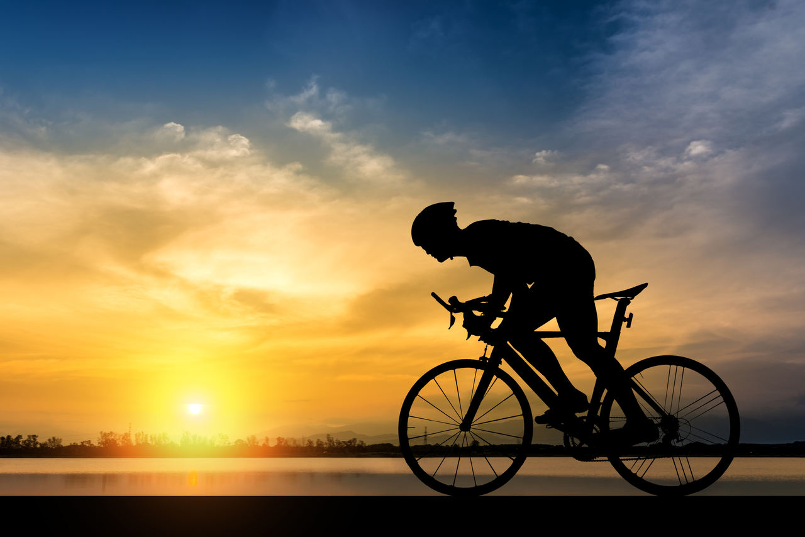

Resistência
Por mais que aparente ser frágil, o bambu é uma planta extremamente resistente, quando passa pelo processo de cura tem a capacidade de aguentar um peso superior a 100kg, tornando-se mais leve que o alumínio e mais resistente que a fibra de carbono.
Disponibilidade
O mundo todo tem fácil acesso ao bambu, apresentando uma característica muito interessante, sendo capaz de continuar desenvolvendo seu crescimento mesmo após seu colhimento, fazendo com que se torne uma planta extremamente renovável.

Sustentabilidade
O bambu é extremamente importante para o meio ambiente, por mais que seja popularmente conhecido como principal fonte de alimento dos ursos pandas. É uma planta eficiente, produz mais oxigênio do que outras árvores além de absorver o dióxido de carbono, tendo ainda um papel fundamental no combate ao desmatamento, nutrindo solos de que foram danificados.
Contribuição física
As fibras presentes no bambu, ao pedalar geram uma absorção maior de impacto, fazendo com que o movimento se torne menos desgastante que o comum, isso para quem tem dificuldade na prática do exercício se torna um ganho muito significativo e apresentam também uma menor probabilidade de danos, sendo mais resistentes que as bikes comuns.
